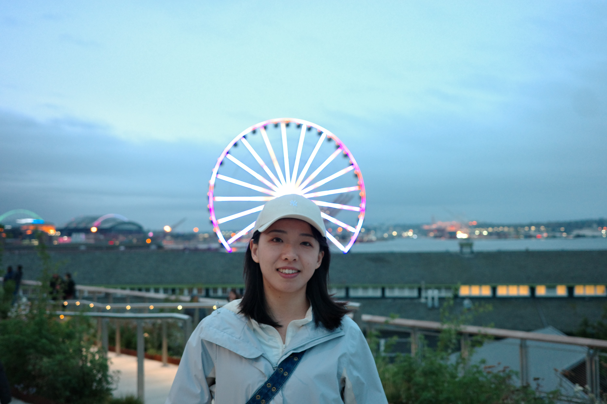

Contact Information
Email: wlicw@connect.ust.hk
Office: Room 5067, LSK Business Building
Institution: HKUST
Wenjuan LI
Ph.D. Candidate in Operations Management
Hong Kong University of Science and Technology (HKUST)
Welcome to my website!
I am a Ph.D. Candidate in Operations Management at the Hong Kong University of Science and Technology (HKUST). I am very fortunate to have Dongwook Shin as my advisor.
Before my Ph.D. journey, I obtained a master's degree from Johns Hopkins Carey Business School and a bachelor's degree from the University of Science and Technology of China.
My research interests include revenue management, information sharing, social learning, content management, finance-OM interface, multi-armed Bandit, and dynamic programming.